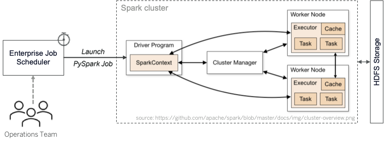

Application Entry point¶
-
cli.main()¶ Command line application entry point handler.
Initializes default logger properties
Creates
pyspark.SparkContextparses first command line argument to identify the use case and delegates control to use case specific controller.
Launching PySpark Applications on bigdata cluster¶
PySpark applications are packaged into an archive, as described in Deployment structure so that they can be run on the Bigdata cluster and take advantage of the Spark’s distributed processing architecture.
The PySpark applications are submitted to the cluster via spark-submit utility.
Here’s is a sample shell file showing the spark-submit command along with several Spark
configuration parameters. It also shows the application archive attached to the job
via --py-files argument. Finally, the PySpark entry point module __main__.py is passed as the
first argument to receive execution control, after the Spark job is launched on the cluster.
#!/usr/bin/env bash
cd ${usecase.folder}/${deploy.root}/deployments/${project.artifactId}
source ./source-env.sh
step=forecast
# submit spark job
$spark_home/bin/spark-submit \
--verbose\
--queue $queue \
--master yarn \
--deploy-mode cluster \
--conf "spark.app.name=${project.artifactId}-$step"\
--conf "spark.sql.parquet.enableVectorizedReader=false" \
--conf "spark.sql.parquet.binaryasstring=true" \
--conf "spark.yarn.appMasterEnv.ENV_NAME=${profiles.active}" \
--conf "spark.yarn.appMasterEnv.SPARK_HOME=$spark_home" \
--conf "spark.yarn.appMasterEnv.PYSPARK_PYTHON=$py35" \
--conf "spark.yarn.appMasterEnv.PYSPARK_DRIVER_PYTHON=$py35" \
--conf "spark.yarn.executorEnv.ENV_NAME=${profiles.active}" \
--conf "spark.executorEnv.SPARK_HOME=$spark_home" \
--conf "spark.executorEnv.PYSPARK_PYTHON=$py35" \
--conf "spark.executorEnv.PYSPARK_DRIVER_PYTHON=$py35" \
--conf "spark.pyspark.python=$py35" \
--conf "spark.pyspark.driver.python=$py35" \
--conf "spark.driver.cores=8"\
--conf "spark.driver.memory=12g"\
--conf "spark.executor.memory=8g"\
--conf "spark.yarn.maxAppAttempts=1" \
--conf "spark.yarn.archive=$hive_home/spark-jars.zip" \
--jars "$hive_home/hive-spark.jar" \
--py-files "${project.build.finalName}-pkg.zip" \
"__main__.py" "{{cookiecutter.usecase}}" "$step" $* \
>> $logdir/$step.log 2>&1